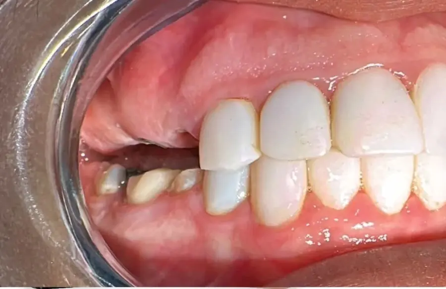

نسخه استخراجشده؛ ترجمه یا تأیید علمی انجام نشده است. وضعیت: captured
بیمار در ناحیهی دندانهای ۴ تا ۶ فک بالا کاندید درمان ایمپلنت است، اما فضای اینتراکلوزال در این ناحیه کم شده است. آیا میشود ایمپلنت گذاشت و با یک روکش پیچشونده مشکل فضا را حل کرد، یا باید از دندانهای مقابل در فک پایین هم ریداکشن انجام شود؟

قبل از هر تصمیمی باید پلن اکلوزال بررسی شود. نکتهی تعیینکننده این است که دندانهای فک پایین نسبت به پلن در چه وضعیتی هستند.
فضای اینتراکلوزال فاصلهی عمودی در دسترس بین ریج بیدندان و دندانهای مقابل است و تعیین میکند چه رستوریشنی روی ایمپلنت جا میشود. کم بودنش محدودیتی است که پیش از جراحی سنجیده و در همان مرحله برطرف میشود، نه مسئلهای که در نوبت ساخت روکش حل شود.
وقتی دندانهای پایین در پلن هستند، فضا در مرحلهی جراحی به دست میآید:
اگر بعد از این اقدامات باز هم فضا کم بود، آن موقع سراغ پروتز پیچشونده (اسکرو ریتیند) میرویم. یعنی پروتز پیچشونده جایگزین اصلاح فضا نیست؛ گزینهای است برای وقتی که با وجود استئوپلاستی و عمق مناسب ایمپلنت، فضا همچنان محدود مانده است.
پروتز پیچشونده آخرین حلقهی این زنجیره است، نه جایگزین اصلاح فضا؛ و دندان سالمی که در پلن ایستاده، برای جبران کمبودی که از سمت فک بالا آمده تراش نمیخورد.